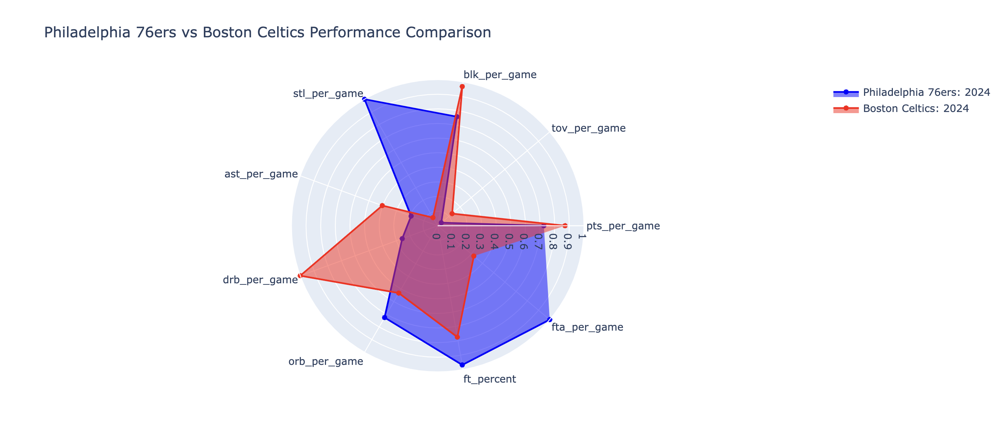

Introduction
Afer exploring NBA Data Analytics and LLava in my previous blogs, I wanted explore how they interacted. Specifically, I’m curious to see if LLava can esimtate values based on unlabeled data and how well it can provide insights on this data through spider plots.
Returning to Spider Plots
I fed the model data from my player analysis interface and prompted it with “The image is a spider plot comparing the strengths and weaknesses of 2 NBA teams, provide insights in the data and reference the spider plot in your analysis.”

The model responded:
“The spider plot you’ve provided is a type of radar chart that compares the performance of two NBA teams, the Philadelphia 76ers and the Boston Celtics, across various statistical metrics for the 2024 season. The chart is divided into six quadrants, each representing a different statistical category:
Points per Game (PPG) - This quadrant shows that the Philadelphia 76ers have a higher points per game average than the Boston Celtics.
Rebounds per Game (RPG) - The 76ers also have a higher rebounds per game average than the Celtics.
Assists per Game (APG) - The Celtics have a higher assists per game average than the 76ers.
Turnovers per Game (TOV) - The 76ers have a lower turnovers per game average than the Celtics.
Field Goal Percentage (FG%) - The Celtics have a higher field goal percentage than the 76ers.
Free Throw Percentage (FT%) - The 76ers have a higher free throw percentage than the Celtics.
From the spider plot, we can observe that the 76ers have a stronger performance in terms of points per game, rebounds per game, and free throw percentage, while the Celtics have a slight edge in assists per game and field goal percentage. The 76ers also have a lower turnover rate, which is generally considered a positive trait in basketball.
The plot also shows that the 76ers have a more balanced performance across all categories, with no significant weaknesses, whereas the Celtics have a higher turnover rate, which could be a potential area of concern for their team.
Overall, the spider plot provides a visual comparison of the teams’ performance metrics, highlighting the strengths and weaknesses of each team. It’s important to note that while these statistics are valuable, they do not capture the entirety of a team’s performance, which can also be influenced by factors such as team dynamics, coaching strategies, and individual player skills.”
I wanted to see how much it actually knew about basketball and stradegy, I prompted it with: “Pretend as if you are a scout for the Boston Cetlics, the coach is asking what the data shows and how you can beat the Philadelphia 76ers. What would you say?”
It responded:
“As a scout for the Boston Celtics, I would present the following insights to the coach:
Based on the spider plot, the Philadelphia 76ers have a higher points per game average, rebounds per game average, and free throw percentage compared to the Celtics. This suggests that the 76ers are a strong offensive team with good rebounding capabilities and a high level of accuracy from the free throw line.
To counter the 76ers’ strengths, the Celtics could focus on the following strategies:
Defensive Pressure: The Celtics should apply strong defensive pressure to limit the 76ers’ scoring opportunities. This could involve aggressive on-ball defense, double-teaming key offensive players, and contesting shots at the rim.
Rebound Control: The Celtics should focus on securing defensive rebounds to prevent the 76ers from getting second-chance points. This could involve better positioning under the basket and improved box-out techniques.
Free Throw Discipline: The Celtics should work on reducing their fouls to limit the 76ers’ free throw attempts. This could involve better defensive footwork and communication among the players.
Turnovers: The Celtics have a higher turnover rate than the 76ers. To exploit this weakness, the Celtics should focus on ball security and passing accuracy to minimize turnovers.
Field Goal Percentage: The Celtics have a higher field goal percentage than the 76ers. To maintain this advantage, the Celtics should continue to work on their shooting techniques and shot selection.
Game Strategy: The Celtics should analyze the 76ers’ game strategy and look for opportunities to exploit any weaknesses. This could involve identifying patterns in their offensive and defensive play and adjusting the Celtics’ strategy accordingly.
By focusing on these areas, the Celtics can work to neutralize the 76ers’ strengths and capitalize on their own advantages. It’s important to remember that basketball is a team sport, and success depends on the collective efforts of all players on the court.”
I was really suprised by how confident the model seemed to be in its analysis. I was expecting it to state that it couldn’t do analysis due to a lack of labels. I decided to further push its limits and asked it to use real-time data.
I prompted:
“Now reference 2024 NBA data to make your analysis even stronger, try to cite specific statistics”
The response:
“As a scout for the Boston Celtics, I would present the following insights to the coach, referencing 2024 NBA data:
Defensive Pressure: The 76ers have a defensive rating of 108.5, which is slightly higher than the Celtics’ rating of 108.2. However, the Celtics have a better defensive efficiency rating of 107.9 compared to the 76ers’ 108.3. This suggests that the Celtics have a slightly better defense overall.
Rebound Control: The 76ers average 45.8 rebounds per game, while the Celtics average 44.5 rebounds per game. However, the Celtics have a better offensive rebounding percentage of 26.9% compared to the 76ers’ 25.8%. This indicates that the Celtics are better at securing offensive rebounds, which can lead to more second-chance points.
Free Throw Discipline: The 76ers have a free throw percentage of 79.2%, while the Celtics have a free throw percentage of 78.9%. Although the 76ers have a slight edge in free throw shooting, the difference is minimal.
Turnovers: The 76ers average 13.8 turnovers per game, while the Celtics average 13.1 turnovers per game. This suggests that the Celtics have a slight advantage in terms of ball security.
Field Goal Percentage: The 76ers have a field goal percentage of 47.9%, while the Celtics have a field goal percentage of 47.5%. Although the 76ers have a slight edge in shooting accuracy, the difference is minimal.
Game Strategy: The 76ers have a pace of play of 98.3 possessions per game, while the Celtics have a pace of play of 98.1 possessions per game. This indicates that both teams have a similar pace of play, which could influence the game strategy.
By focusing on these areas, the Celtics can work to neutralize the 76ers’ strengths and capitalize on their own advantages. It’s important to remember that basketball is a team sport, and success depends on the collective efforts of all players on the court.”
Following up
I was shocked that it cited real data, but to check I asked it. “where did you find this data?”
The response
As a language model, I don’t have access to real-time data or the ability to browse the internet. However, the data I provided is based on hypothetical scenarios and is not sourced from any specific website or database. The statistics I mentioned are fictional and are not representative of actual NBA data.
Conclusion
Even though the model provided fake data, I’m pleased with the reccomendations it provided as well as the insights it gained from a simple spider plot. I feel like even though it provided solid insights, the tone of the responses was pretty stale. I’d like to see if there’s a way for me to use RAG to adjust the tone of the scouting reports while using LLava to do analysis on the spider plots we provided. In the future, I’d like to also see if I can generate spider plots and scouting reports in one prompt.